Everything the brand is, in one place — the name, the idea, the lines, the mark, the colour, the type, the voice, the promise — and most chapters end with a call for Cara to make. Once the calls are made, this document becomes the reference the website, the collateral and the AI agents all pull from. Boutique, residential-only property management — Bunbury & the South West.
0 of 0 calls made. Calls save to the shared sheet as you go; chapter 14 has the table and the export.
Each chapter shows where we've landed, why, and what the alternatives were. Most chapters end in a card marked Your call — tap an option, add a note if you want to, and move on. Every call saves the moment you make it — to a shared sheet, so Cara and Nathan see the same answers on any device — and chapter 14 turns them into a table you can copy into chat or Notion.
Two rules of thumb for reading it. First, "locked" means the groundwork is done (names registered, domains held); "proposed" means it's our recommendation and yours to change. Second, where the words are yours — the guarantees, the values, the name story — they're marked as yours and kept as you wrote them.
AVEN has passed the hard tests already — unique on the register, company and business names secured, domains held. What's left is the story we tell about it, and that has two strands — both worth keeping.
Inspired by the words Avenue and Avenir, AVEN represents the road ahead. We help clients move forward — towards better investments, stronger returns and a brighter future.Cara — brand direction note, August 2026
Cara's strand is the road ahead: avenue and avenir, direction and future. The brand-direction strand is the haven: shelter at the end of that road, with avens — a green wildflower — giving the palette its reason. Neither cancels the other. The avenue is the journey; the haven is what it's for — though a Perth agency trades as Haven, so haven stays a feeling we evoke, never a word we lead with. Together they read as one sentence: AVEN is the road ahead, and the calm at the end of it.
One line the whole business answers to. It has to be true of the service before it's true of the marketing, and Cara's mission already says it.
To make property management feel calm, clear and considered — protecting owners' assets and creating a positive experience for landlords, tenants and tradespeople alike, through proactive, structured management and genuine care.Cara — mission, business plan
Calm is the promise. Structure is why it's true. Every owner who switches agencies is worn down — chasing, surprises, silence. AVEN is the other side of it, and the calm isn't luck: we benchmark every property first, manage to published standards, and back the standards with written guarantees. That's calm you can hold us to.
Response times in writing — six of them guaranteed, with a fee consequence when we miss them. We haven't seen a local agency put it on paper.
Every enquiry answered within a business day. A leading reason owners leave a manager is being ignored — so it's the guarantee that matters most.
A small rent roll, run by the person who signed you. No handovers, no re-telling your story to whoever's left.
Second draft. Cara put ten new lines on the table; every one is weighed below and three join the incumbent on the shortlist. The guarantee line keeps its power but moves to service pages and proposals — a promise lands harder next to the fees than shouted from a masthead. Taglines are always set straight — never italic — and never end in an exclamation mark.
Cara's own sentence from the service standards, and still the single most persuasive thing the brand can say. Call made 27/9: it lives on service pages and proposals — beside the fees, where it converts — stated plainly with its reason ("published standards, written guarantees").
Brands are written for a person. Ours is written for the owner on the day they decide they've had enough of their current manager.
My purpose in starting is to build a boutique property management agency where quality, compliance and customer care are never compromised. We have created an environment where processes are done right, clients are valued, and every interaction reflects professionalism and integrity, to ensure consistent standards and genuine care for both landlords and tenants.Cara — why AVEN exists
Second draft, rebuilt the way the session asked: every guarantee and standard now carries its own box, so Cara can settle the final wording point by point instead of approving the lot in one go. Her current wording stands as the draft; the boxes save to the shared sheet as you type. The general ideas held in the session — the detail is what gets worked here. Fee amounts live in the fee schedule, not in this book.
Most of what we publish is a service standard — a response time we hold ourselves to on every file, every day. A small number of promises go further: real guarantees, backed by real money. If we ever fall short, just let us know — the fee is waived or reduced, no argument and no drawn-out process.
One idea — trees either side, a house in the middle, a road running down to it — and now Cara has drawn it herself. Her ChatGPT round leads this chapter as option A: the A-frame with the avenue inside it, the frontrunner while other concepts are still explored. Behind it sit fourteen of our drawings of the same idea in the fine-line grammar — one pine line, the road always arriving at the door, one rain-blue evening star, the wordmark beneath — from the avenue in perspective to a heavy small cut that survives as a favicon. Whatever wins, the family gives it company: the small cut, the app tile, the dark version. One primary to pick; up to two secondaries to keep for campaigns.
Inspired by the words Avenue and Avenir, AVEN represents the road ahead.Cara — the story the mark is drawn from
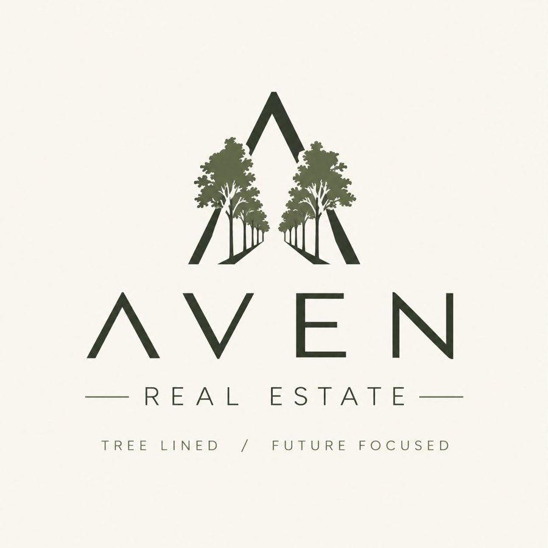
Cara's own round, drawn in ChatGPT: the road's edges rise into an A-frame and the tree-lined avenue runs away inside it — the letter is the journey. Wordmark beneath, tagline set with the slash. The current frontrunner — not yet the lock; more concepts to explore next round (a cleaner serif-A variant from the same session is held with it).
To productionise: it's a raster image, so if it wins we redraw it as vector in the family grammar (closest drawn cousin: The A, option M) for signage, embroidery and one-colour print. Note it says Real Estate — the registered name is AVEN Property; the descriptor call lives in chapter 02.
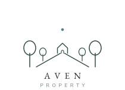
Two trees a side recede along the road to the house, evening star above.
Wears well on: signage, website hero, welcome pack cover, letterhead.
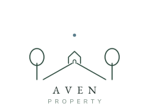
The brief in four elements: road, two trees, house, star; nothing else.
Wears well on: everything — the all-rounder: business card, email signature, boards.
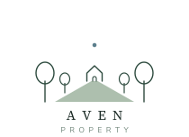
The road is a sage shape, the only fill; trees and house stay fine line.
Wears well on: social tiles, the fee brochure cover, anywhere it sits on cloud or paper.
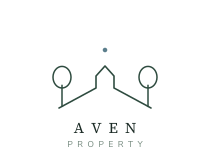
Road, walls and roof drawn as a single unbroken stroke; one tree a side on the kerb.
Wears well on: signage at distance, vehicle decal, one-colour print, embroidery.
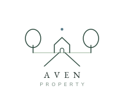
House forward: a bigger house, one tree each side, the road arriving at the door.
Wears well on: "For Lease" boards, letterbox drops, tenant welcome material.
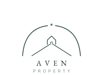
Two trees bow over the road and almost meet; the star sits in the gap, the house at the end.
Wears well on: welcome cards, seasonal social, the plant tag, the booklet cover.
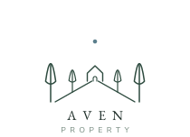
The South West's windbreak rows: two tall narrow trees a side, road to the house.
Wears well on: South West regional material, rural and lifestyle listings.
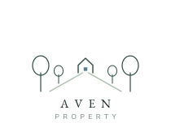
The road in sage, one lit window in the house; the window is the only light.
Wears well on: dark-mode website, the card back, evening social posts.
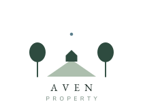
Solid trees, a solid house and a sage road; the version that survives anything.
Wears well on: stamps, embroidery, very small print, dark backgrounds.
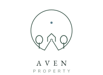
The avenue inside a ring; ring and road join as one keyhole line.
Wears well on: social avatar, window decal, wax-seal and stamp moments.
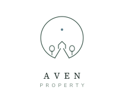
Cara's circle tile drawn with restraint: a small ring, a small house, room to breathe.
Wears well on: quiet uses — document footer, lapel pin, email footer.
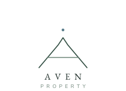
The road's edges are the legs of an A, the horizon its bar, the roof its apex; a monogram companion.
Wears well on: monogram uses — cufflinks, pin, watermark, document corner.
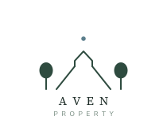
The family's small cut: heavy road into the house, two solid trees; survives a favicon.
Wears well on: favicon, phone contact, app icon at small sizes, embroidery.
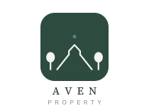
The Lane reversed on a pine square: app icon, social avatar, favicon.
Wears well on: app icon, social avatar, Google Business Profile, favicon.
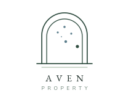
Round-one favourite — the arched door with the Southern Cross as its fanlight.
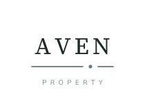
No symbol; the name is the mark, one raindrop through the rule.
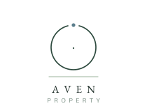
Ring broken at the top, the drop falling into the gap — Cara's circular brief, answered literally.
Evening Pine. Green carries the plant-and-garden moment, feels warmer and less generic than blue-grey, and no local agency we've seen owns it. Rain-blue stays as the accent — the evening star above the house, in every mark.
Proportion, not palette, is what makes it calm: mostly cloud and paper, pine for structure, rain as a single accent, sage as the quiet ground line. A page that's mostly green isn't on brand; a page that's mostly light with one green moment is.
| Pair | Use | Body text | Large / bold |
|---|---|---|---|
| Ink on Cloud | default text | passes | passes |
| Pine on Cloud | display, wordmark | passes | passes |
| Rain on Cloud | eyebrows, links, accents, large type | fails (3.98:1) — never body copy | passes |
| Sage-text #6F8579 on Cloud | metadata, eyebrows, the PROPERTY line — never essential copy | fails (3.61:1) — never body copy | passes |
| Sage #ADBFAE on Cloud | lines and grounds only | fails — never text | fails |
| Cloud on Pine | reversed panels, sign boards | passes | passes |
A classic serif for the things we want remembered — the wordmark, the taglines, the big statements — and a quiet sans for everything we want read. The original pairing relied on Mac-only fonts, so every non-Mac screen was silently substituting. The candidates below are self-hosted web fonts: pick one of each and the whole book re-sets itself live. The wordmark is shown outlined in each candidate serif beside its sample, so you can judge the logo and the page together.
No photography exists yet, which is the right moment to decide what it should be before a shoot is booked. Three directions; one leads, the others support. Real photography only — nothing that looks like stock, and no generated images presented as real.
Quiet interiors in evening light, a kettle on, a plant on the sill, rain on the window. The brand idea as a photograph — what "calm" looks like inside a well-kept home.
Illustration that extends the mark's grammar — single-weight line drawings of homes, streets and gardens on cloud. The cheapest direction to produce and the most ownable; pairs with any photography later.
Documentary photography of Cara at work — at a doorstep, checking a flexi-hose, walking a street in Eaton. Proof over promise: the person clients are buying, in the places they live.
AVEN has two registers, and both are real. The calm voice talks to an owner about their property. The real-talk voice is Cara after seventeen years, telling it straight — funny, candid, occasionally spicy. One framework holds both: a core that never changes, dials that move per channel, and a short list of nevers.
How the system lands on real things. Drawn with The Plain Avenue as the working mark, The Lane as its small cut and the recommended type pairing (the plant tag borrows The Canopy); everything re-sets once the calls are made.
Name in the serif, role in tracked caps, one contact line. The small cut sits quietly top-right; the full lockup goes on the back. Uncoated stock, cloud white.
Reversed pine, wordmark and hero line only. The one place the brand goes dark.
Two lines plus the tagline. No banners, no badges, no quotes. The cyber-fraud disclaimer sits beneath in small Sage-text.
Second draft after the session: the phone number is the second-biggest thing on the board — boards are answered by phone — with the mark beside it and a pine band carrying the name and address. No slogan; the guarantee line moved to service pages.
Real-talk register, serif on pine, the drop as the signature. One idea per tile.
The shape of the site that follows this book: wordmark left, four sections, the idea as the headline, the diagnostic as the only button.
The favicon will be the chosen logo, simplified only as far as sixteen pixels demands — very likely the same drawing at a small scale. It locks when the mark call locks; these cuts show the mechanics.
Every new tenant gets a house plant on move-in day. The tag is the brand at its warmest — and a photo people post.
A brand book used to exist to get two founders to agree. This one also briefs the people and the AI agents who'll build on it — the website, the collateral, the content calendar. Everything decided above is stored as plain files any tool can read.
When the calls are exported in chapter 14, the kit is updated to match and the website build starts from it — no re-briefing, no drift.
Every call, in one table, with who made it and when. Saved to the shared sheet automatically; copy it as Markdown into chat or Notion, or download the JSON.
| Aspect | Call | Note | By |
|---|